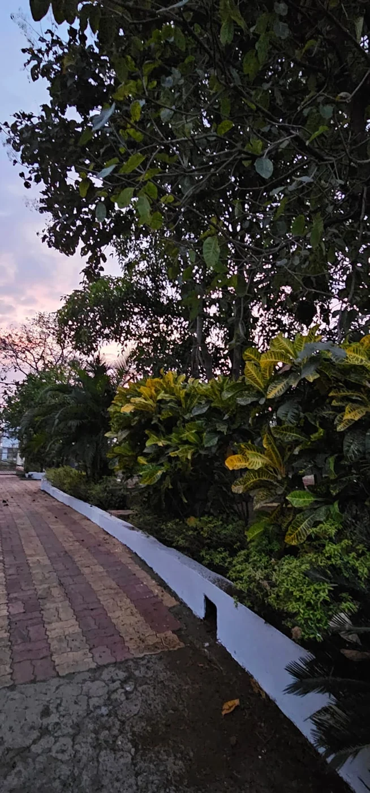
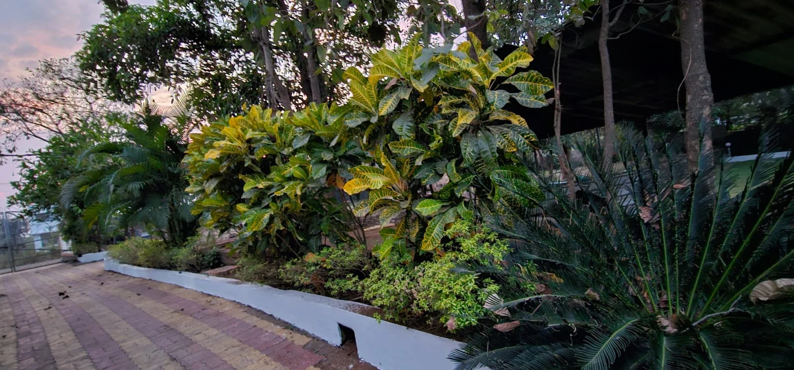
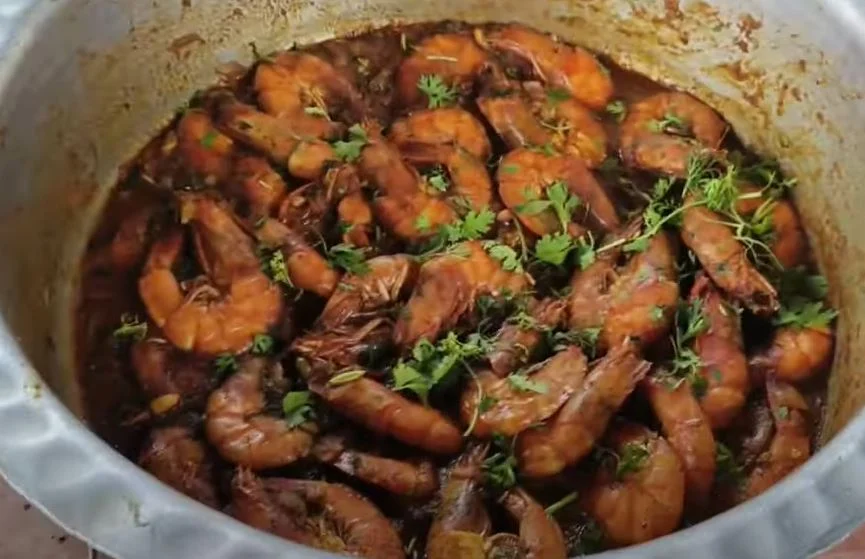
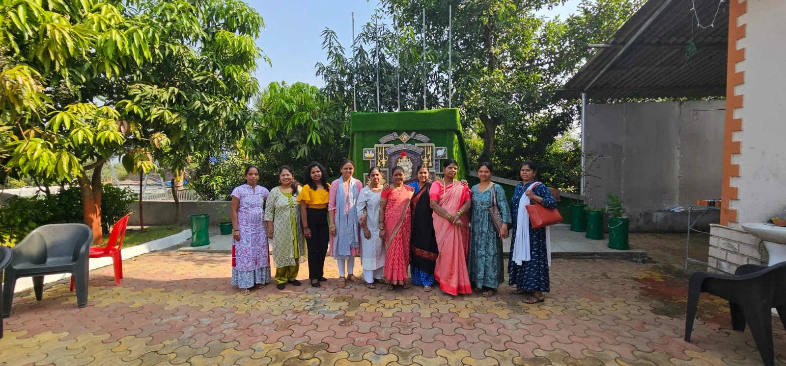
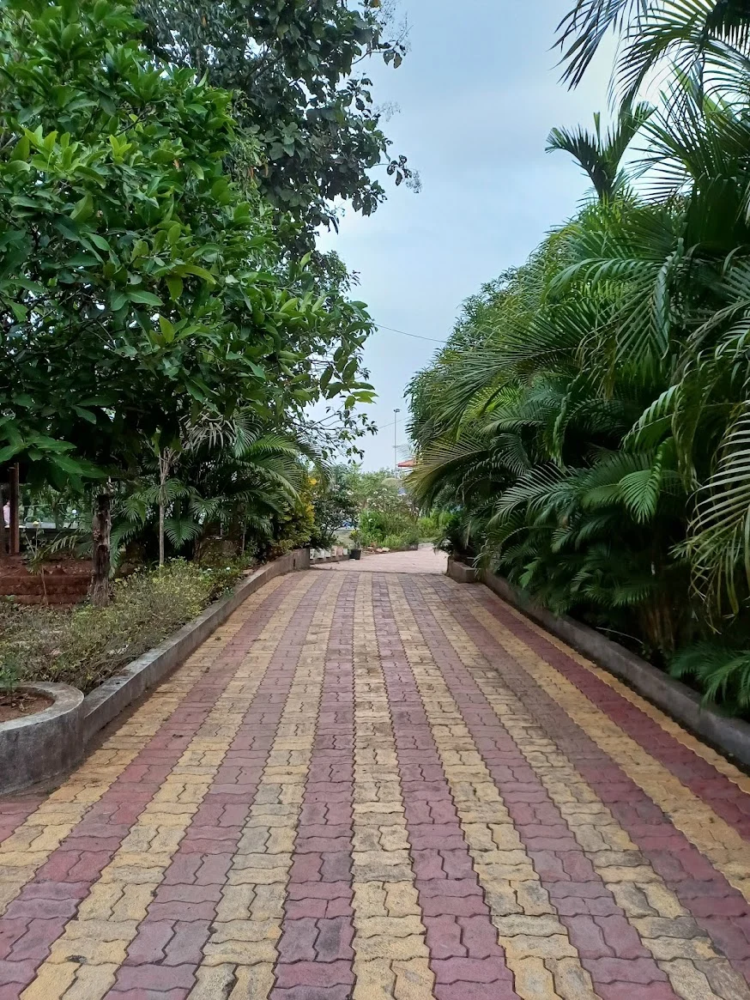

01 / STAYRoom to unwind
Comfortable accommodation, lush surroundings, and the quiet rhythm of village life.
Ask about a stay
PUNDAS, MAHARASHTRA
Leave the everyday behind. Find green spaces,
village flavours, and time for the people you love.
WELCOME TO OM HARSH FARM
Some places make you feel at home.
This one brings you back to nature.
Tucked away in Pundas, Om Harsh Farm brings the warmth of village life to your getaway. Wander through greenery, sit down to a local meal, and settle into a peaceful stay.
Come for a change of scenery. Stay for the simple moments.
Find your kind of dayMAKE YOURSELF AT HOME
A place to unwind, share a meal,
and spend a little longer together.

01 / STAYComfortable accommodation, lush surroundings, and the quiet rhythm of village life.
Ask about a stay
02 / TASTEAuthentic local cooking, generous plates, and meals made to be enjoyed together.
Explore dining options
03 / TOGETHERBring family and friends for shared meals, garden conversations, and memories in the open air.
Plan a group visitA DIFFERENT VIEW, EVERY TURN
A GLIMPSE OF THE GOOD LIFE
Take a closer look at the farm.
Then come and make it your own.
REAL MOMENTS. OUR FARM.

YOUR NEXT LITTLE ESCAPECOME OVER. SLOW DOWN.
Tell us when you’d like to come and who you’re bringing. We’ll help you plan your visit, meals, or stay.
Chat on WhatsAppOm Harsh Farm, Pundas
Maharashtra, India